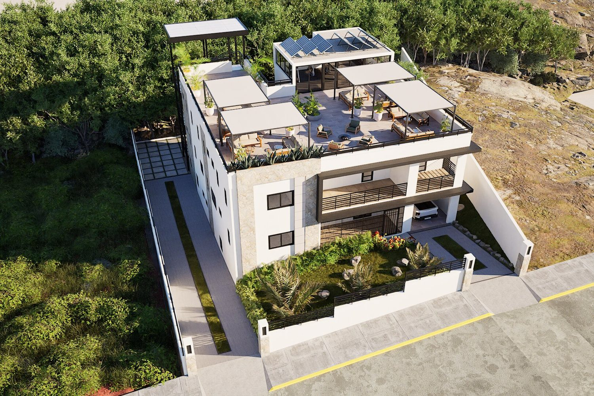

Front FacadePrimary street-facing elevation with stone accents, black framing and landscaped frontage.
Residential Design · 3D Visualization
LOT 18
MOUNT BOON.
A complete residential design study for Lot 18 Mount Boon, developed from the floor plan upward. Crio Creatives designed the layouts, built the 3D model from those plans, and carried the concept through exterior architecture, rooftop amenities, landscaping and interior design.
Discovery Bay, St. AnnInterior + ExteriorFloor Plans

Project Overview
This was a top-to-bottom design project. The work began with the floor plan, which became the basis of the 3D model. From there, the building form, exterior language, landscape, rooftop amenities and interior spaces were designed as one coordinated residential concept.
Floor Plan DesignGround-floor and first-floor layouts developed as the foundation of the project.
3D + Exterior DesignThe floor plans were translated into a full 3D model, then resolved into the final exterior language.
Rooftop DesignOutdoor lounge zones, covered seating, gym and solar-equipped rooftop designed as part of the full concept.
Interior DesignLiving, dining and kitchen spaces developed to continue the same material and visual language.
From Floor Plan to 3D Model
The design process started with original ground-floor and first-floor layouts. Those plans established the spatial organization and circulation, then became the basis for the 3D model used to develop the architecture, exterior spaces and interiors.

Floor Plan Design
Original ground-floor and first-floor layouts developed to establish the room relationships, circulation and overall organization of the home.

3D Model Development
The approved floor-plan logic was translated into a complete 3D model, allowing the massing, facade, stairs, rooftop and exterior relationships to be resolved in three dimensions.
Designed Layouts in 3D
Rendered overhead views of both levels show how the original floor plans translate into the completed spatial design, including furniture, circulation and outdoor relationships.
Exterior Design
With the floor plan and base model established, the exterior was developed as a complete architectural composition — facade proportions, materials, balconies, stair structures, landscaping and circulation were all resolved as part of the design.
Aerial Front ViewHigh-angle view showing the overall massing, roof terrace and front garden.
Rear ElevationRear facade and external stair tower with upper-level glazing.
Side ElevationLong side elevation with a restrained window rhythm and planted edge.
Street ViewFront boundary, driveway and the building's relationship to the road.
Rear AerialRear garden, stepping-stone path and circulation around the building.
Rear Stair TowerExternal stair structure and rooftop access viewed from above.
Garden + StairsLandscaped rear courtyard with secondary stairs and circulation.
Stair Tower DetailLow-angle view emphasizing the black steel external stair tower.
Rooftop AerialAerial view clarifying the roof pavilion, solar panels and terrace layout.
Courtyard ViewLower rear courtyard, stairs and planted central zone.
Rooftop Design
The rooftop was designed as an extension of the home rather than leftover space, combining social areas, shaded seating, planting, a glazed pavilion, fitness space and solar infrastructure into one usable amenity level.
Rooftop PavilionGlazed rooftop pavilion opening directly onto the terrace.
Central LoungeOpen-air lounge centered around a fire-pit seating arrangement.
Rooftop OverviewWide view of the rooftop social spaces, shade structures and planting.
Covered SeatingShaded lounge zone with soft seating and planted edges.
Rooftop Gym IFitness room with free weights and cardio equipment.
Rooftop Gym IIAlternate gym view showing the glazing and open workout area.
Rooftop Gym IIIWide fitness-room view with terrace access and natural light.
Interior Design
The interior was developed from the same floor-plan framework and carries the project into the living, dining and kitchen spaces. Warm timber, white and taupe cabinetry, dark feature surfaces, black frames and restrained olive accents create a consistent contemporary language.
Living RoomOpen-plan living room with warm neutrals, timber accents and a dark media wall.
Media WallFront-facing composition of the television wall and low floating console.
Dining AreaSix-seat dining arrangement with vertical timber feature panel and ring pendant.
Kitchen OverviewU-shaped kitchen with peninsula seating and layered white, taupe and timber finishes.
Kitchen Storage WallTall refrigerator wall with open shelving and integrated timber detailing.
Kitchen Work ZoneSink, cooktop and prep surfaces arranged around the compact U-shaped plan.
Kitchen to DiningView through the kitchen toward the dining area and open-plan circulation.
Dining to LivingDining area aligned toward the living room with repeated circular pendant lighting.
Living Room IIAlternate living-room view highlighting the staircase feature and full circulation path.
Designed from floor plan to final render.
A complete residential design process — planning, 3D modeling, exterior, rooftop and interior design.
Lot 18 Mount Boon, Discovery Bay, St. Ann · Crio Creatives, LLC
Lot 18 Mount Boon, Discovery Bay, St. Ann · Crio Creatives, LLC